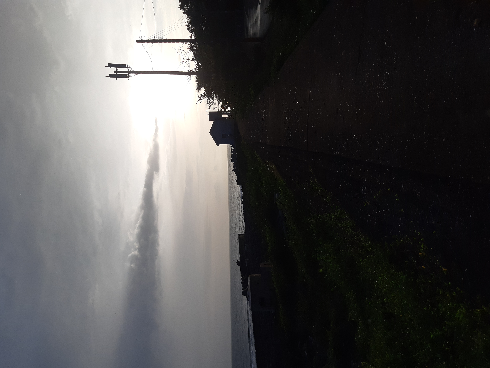
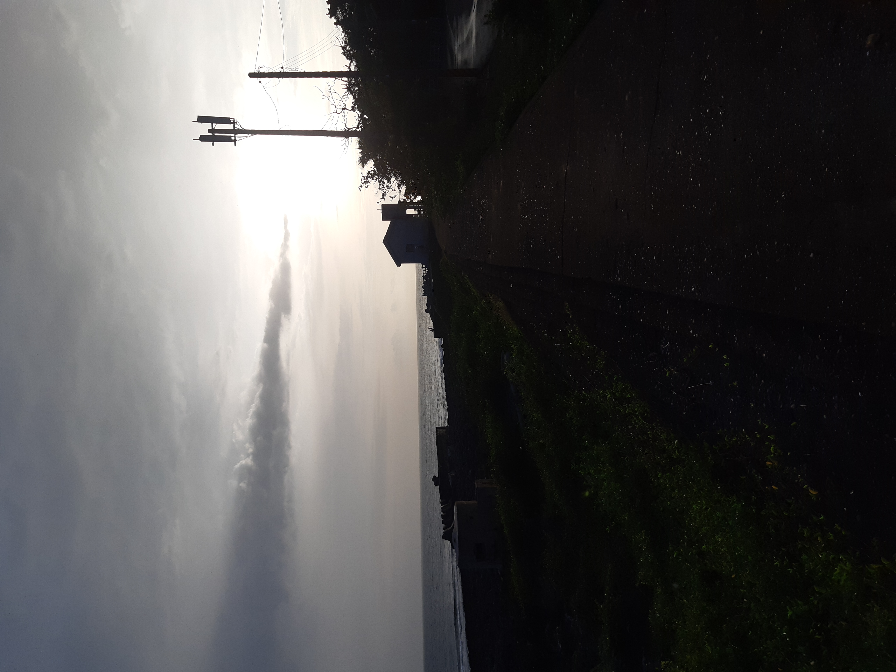
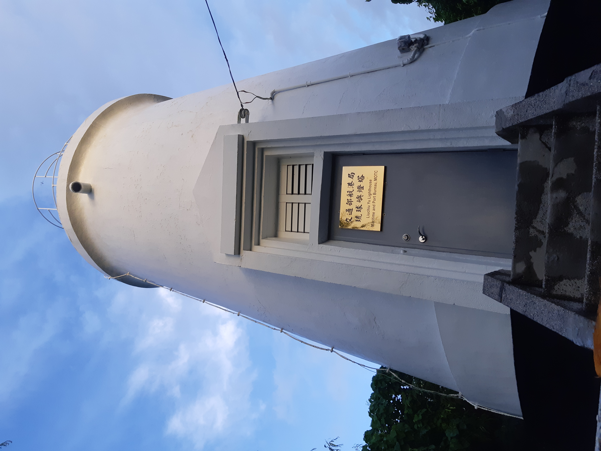
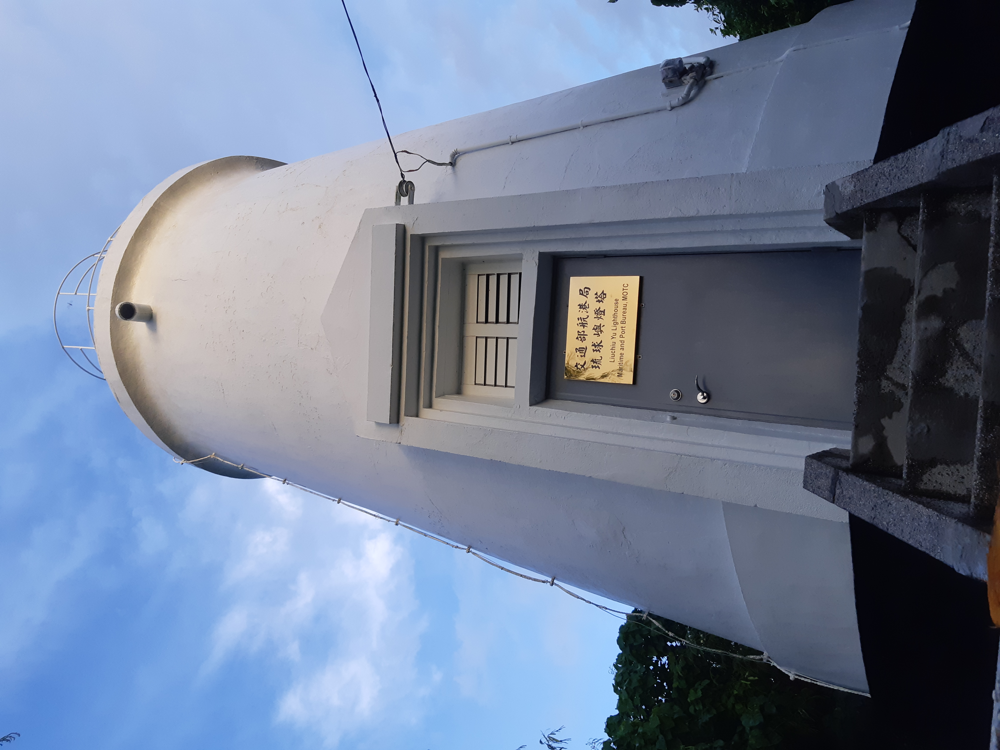

2020/7
My summmer in Kentin
In summer I went to the Kentin with my high school classmate,they are
also my best friend too, we were at the thouthest area of Taiwan and had
a lot of good memory there. here are some picture of where we had been.
The one with surfboard is me !
Many great views in Kentin make you want to get back here again!
2019/1
My fall in japan
On those days in japan,I'm also with my high school classmate and same
member when I went to Kentin. It was fall but there did not have lots of
snow,because some kind of weather sistuation... Anyway it was still had
lots of fun with my boys.
The picture of colorful glass wall.i took it in a small airport. Lots of
japanese culture elements in it!
I'm also took some picture of Japanese castle,temple and japanese foods
sold on train.


 

 
